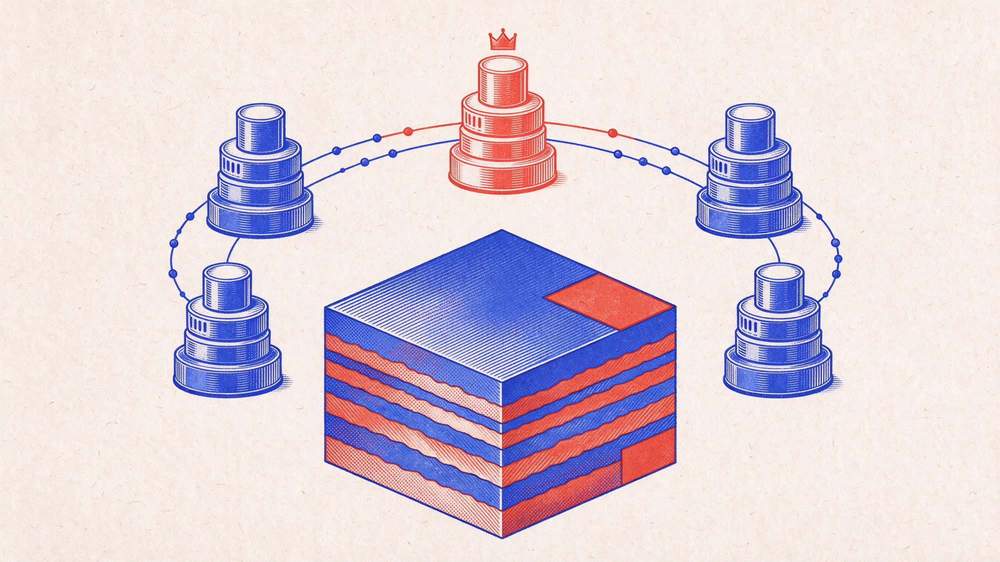

★ Featured project · distributed systems
DistDB
A distributed SQL database, built from scratch in Java 25. Raft-replicated ranges on an LSM engine, Percolator transactions, a cost-based planner and the PostgreSQL wire protocol, each tested under injected faults.
- language
- Java 25
- modules
- 15, layered (ArchUnit-enforced)
- replication
- Raft ×3 per range
- isolation
- snapshot · Percolator
- protocol
- PostgreSQL wire
- observability
- Prometheus · Grafana
- status
- 10 / 10 phases ✓

Ranges ×3, on an LSM tree
Data is split into ranges, and each range is replicated three ways with Raft. Underneath is a log-structured merge engine: WAL, group commit, SSTables, MVCC keys.
Snapshot isolation, cross-range
Percolator-style two-phase commits, with timestamps from a Raft-replicated oracle in the placement driver. No dirty reads, lost updates or read skew.
Speaks PostgreSQL
Parser, binder and a cost-based planner that pushes filters and partial aggregates down to the ranges. Any node accepts psql or JDBC.
Proven, then broken on purpose
Each layer passed a deterministic simulator (partitions, power cuts, failing disks), then ran as real processes with kill -9, iptables partitions and clock skew.
How a statement travels
Hover or tap a component.
gateway
A statement can arrive at any node. That node parses, binds and plans it, then runs it as a transaction. Filters, projections and partial aggregates execute on the ranges themselves, and the gateway merges the results.
more fsynced writes per second from group commit (1,382 → 15,581 ops/s at 16 threads); p99 from 195 ms to 4 ms.
SQL point-update throughput from batching timestamp requests to the oracle.
fewer network bytes at the gateway with coprocessor pushdown, and aggregations 1.8× faster.
to get back to 90% throughput after a kill -9 of the node leading the most ranges.
units of money still in the bank after 10 injected faults, 1,111 transfers and 203 audits. None lost, none created.
simulated seeds in the Raft gate: lossy networks, partitions, power cuts, membership changes. The history must stay linearizable.
All measured on a single laptop (i5-13420H, NVMe, Windows 11). With every node on the same machine, “3 nodes” shows the cost of coordination, not scale-out. On NTFS an fsync costs about 2 ms, which caps write throughput.
Ten phases, each with a gate it had to pass
- 01Foundations & determinism seams
- 02LSM engine, crash-tested
- 03KV server over gRPC
- 04Raft + deterministic simulator
- 05Replicated, linearizable KV
- 06Multi-Raft, sharding, placement driver
- 07Percolator transactions
- 08SQL + PostgreSQL wire protocol
- 09Distributed execution, cost-based optimizer
- 10Chaos suite, benchmarks, observability